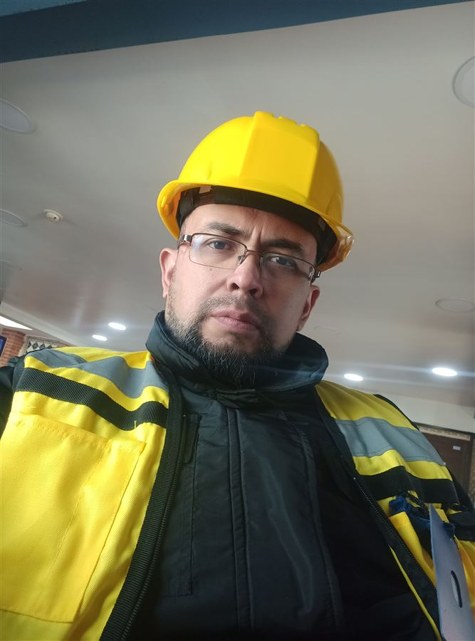

Hola, soy
Rafael Nuñez
Bienvenido a mi portafolio profesional. Aquí encontrarás mi experiencia, habilidades y proyectos desarrollados.

Sobre mí
Profesional de Ingeniería de Sistemas con experiencia en infraestructura tecnológica, redes, seguridad electrónica y soporte TI. Enfocado en la implementación, mantenimiento y solución de problemas tecnológicos en entornos profesionales. Cuento con experiencia en sistemas de videovigilancia, cableado estructurado, servidores, almacenamiento NAS, redes empresariales y desarrollo de soluciones web, integrando conocimientos de hardware, software e infraestructura para atender necesidades tecnológicas de manera eficiente.
Experiencia Profesional
Ingeniería de Sistemas
Desarrollo de soluciones tecnológicas · Soporte TI · Infraestructura · RedesExperiencia en desarrollo de soluciones tecnológicas, soporte de sistemas, infraestructura de TI, redes y bases de datos, orientada a resolver necesidades operativas y mejorar procesos mediante herramientas tecnológicas.
Especialista en Seguridad Electrónica
CCTV · Control de Acceso · Videoporteros · AlarmasExperiencia en instalación, configuración, puesta en operación y soporte de sistemas de seguridad electrónica, incluyendo videovigilancia IP y analógica, control de acceso, videoporteros y soluciones de alarma.
Infraestructura Tecnológica
Redes · Cableado Estructurado · NAS · SoporteExperiencia en implementación y soporte de infraestructura tecnológica, incluyendo redes, cableado estructurado, almacenamiento NAS, configuración de equipos y atención de requerimientos técnicos en entornos empresariales.
Habilidades
Habilidades técnicas desarrolladas a través de experiencia en infraestructura, seguridad electrónica, redes y desarrollo de soluciones tecnológicas.
Portafolio
Proyectos tecnológicos desarrollados en infraestructura, seguridad electrónica, redes y soluciones digitales.
Sistemas CCTV
Implementación, instalación y configuración de sistemas de videovigilancia IP y analógicos. Experiencia con soluciones de fabricantes como Hikvision, Hanwha Vision y Mobotix, incluyendo configuración de cámaras, NVR/DVR, monitoreo y puesta en operación de sistemas de seguridad.
Infraestructura de Redes
Implementación y soporte de infraestructura de redes, incluyendo cableado estructurado, canalización, conectividad y configuración de equipos de red. Experiencia en instalación, diagnóstico y puesta en operación de redes para entornos empresariales.
Servidores y NAS
Configuración y administración de soluciones de almacenamiento NAS, principalmente QNAP, orientadas a la gestión de archivos, almacenamiento centralizado y respaldo de información. Implementación y soporte de soluciones de almacenamiento para entornos empresariales.
Desarrollo Web
Desarrollo de aplicaciones y soluciones web orientadas a las necesidades de negocio, integrando interfaces, lógica de aplicación y bases de datos. Experiencia con PHP, Python, Django, MySQL/MariaDB, HTML, CSS y Bootstrap.
Soporte TI
Diagnóstico y resolución de incidencias de hardware y software, mantenimiento preventivo y correctivo, configuración de equipos y soporte a usuarios en entornos empresariales.
Seguridad Electronica
Implementación y soporte de soluciones de seguridad electrónica, incluyendo control de acceso, alarmas, videoporteros y sistemas integrados de videovigilancia.
Proyectos
Proyectos tecnológicos desarrollados e implementados en diferentes entornos profesionales. A continuación, se presenta una selección de los proyectos más recientes y relevantes de mi trayectoria profesional.
Sistema Integral de Seguridad Electrónica para Bimbo
Implementación de una solución integral de videovigilancia para las instalaciones de Bimbo, incluyendo distribución estratégica de cámaras, infraestructura de canalización y cableado, instalación y configuración de equipos, y puesta en operación del sistema para mejorar la cobertura, visibilidad y supervisión de áreas estratégicas.
Ver galeríaImplementación de Soluciones Tecnológicas para Centro Médico
Implementación de soluciones tecnológicas orientadas a fortalecer la seguridad, infraestructura y operación del centro médico, mediante la instalación y configuración de sistemas tecnológicos adaptados a las necesidades de la institución.
Ver galeríaContacto
Si deseas conocer más sobre mi experiencia profesional, proyectos o servicios tecnológicos, puedes contactarme.
rafanunezgmex@gmail.com
Teléfono
+52 566 755 3924
rafa_nunezg